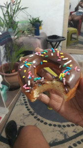

Ingredientes:
- 4 xícaras com farinha de trigo sem fermento.
- 1 xicara de 250 ml com leite morno
- 3 colheres de sopa com açúcar
- 1 ovo (quebre antes de usar)
- 1 colher de chá com sal
- 1 (sachê)20g fermento biológico seco(rasgue antes de usar)
- 3 colheres de sopa com manteiga
- 1 colher de sopa com essência de baunilha
Cobertura:
- 400 g chocolate meio amargo derretido
- Granulado colorido para confeitar
Modo de preparo
Vá até a cozinha,separe todos Ingredientes. Deixe tudo em recipiente com as medidas certas.
Pegue uma panelinha coloque o leite,leve ao fogo,deixe por uns 20 segundos e Não deixe esquentar demais e nem deixar muito frio.Em uma vasilha coloque o leite acrescenta a manteiga,ovo,açúcar,sal e fermento.
Pegue uma colher de pau ou um fuê o que desejar e mexa até dissolver todos os ingredientes.
Em seguida vá acrescentando farinha de trigo aos poucos,e vai mexendo até misturar todos os ingredientes.Com tudo misturado em uma vasilha,despeje a massa.

Com a mesa bem limpa ! Sove a massa até desgrudar da mão apróximadamente 30 minutos.Quando sentir a massa mais leve e bem bonita sem nenhum caroçinho. Feito isso,coloque de volta na vasilha e tampe com um pano de prato filme, coloque no forno e deixe lá descansando por 1 hora com o forno desligado.

1 hora depois retire a vasilha de dentro do forno Despeje novamente a massa na mesa,limpa e higienizada,abre a massa com o rolo deixando expessura de 3cm de altura.

Em seguida vai faça os cortes para e vai colocando em uma assadeira para descansar!
.jpeg)
Passando os 20 minutos eles estiverem maiores você tem a opção de assar por 20 minutos no forno 200graus ou fritar no oléo morno,não muito quente para não queimar e deixar dentro crú.Façam todos e reserve para confeitar.
.jpeg)
Confeitar:
Derreta o chocolate em banho maria ou no microondas

Pegue o donut já frito mergulhe no chocolate deixar escorrer em um prato.Pegue granulado e povilhe por cima donut Pronto já tem um delicioso donut de chocolate!
Bom Apetite!